L’ordre du Mérite agricole ou « Légion d’honneur agricole », ou « médaille des champs » ou « Poireau », selon ses différents diminutifs, est l’un des plus prestigieux des ordres ministériels français avec l’ordre des Palmes Académiques, l’ordre du Mérite maritime et l’ordre des Arts et des Lettres. Avec ces 3 autres ordres (ministériels et non « nationaux »), il a d’ailleurs survécu à la suppression des nombreux ordres ministériels créés aux XIX° et XX° siècles et remplacés le 3 décembre 1963 par le général de Gaulle, lorsque celui-ci instaura l’ordre national du Mérite.
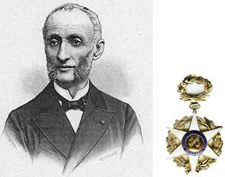
La survivance de cet ordre ministériel tient sans doute à son histoire propre, si particulière, liée à une forte tradition agricole française (aujourd’hui encore 1er producteur de l’Union Européenne et 4ème exportateur mondiale). En effet, dans l'esprit de son créateur Jules Méline (1838-1925), (photo) Ministre de l’Agriculture (de février 1883 à avril 1885) dans le deuxième gouvernement de Jules Ferry (1832-1893), l’ordre du Mérite agricole créé le 7 Juillet 1883, devait avoir la même valeur que la Légion d'honneur dont il aurait été sa version agricole. Le ministre n’hésita pas d’ailleurs de déclarer à cette époque que :
« Cette institution sera accueillie avec reconnaissance par l’agriculture française, qui y verra une preuve de la sollicitude du gouvernement de la République et un encouragement à redoubler d’effort pour conserver le rang qu’elle doit occuper dans un pays dont elle fait la richesse et la force ».
Il faut dire qu’à cette époque, la France est encore un pays à (très) forte vocation agricole, puisque pas moins de 18 millions de français (sur les 39 millions de l’époque, soit 46 %) vivent directement ou indirectement de cette industrie. Il convient aussi de rappeler que le nombre d’agriculteurs accédant au premier ordre national de la Légion d’honneur est quasi insignifiant. Il semblait donc inconcevable que cette force vive de la Nation chargée de la nourrir ne puisse avoir sa propre récompense. Ainsi naissait l’ordre du Mérite agricole en cette fin de XIX° siècle. Cet Ordre verra d’ailleurs son contingent de récipiendaires augmenté par un décret ministériel du 18 juin 1887, soit 4 ans à peine après sa création. Il portera le nombre de récipiendaires au grade de chevaliers de 1.000 à 2.000 chevaliers et 300 croix d’officiers, ce qui en fera aussitôt un ordre fort prisé. Par la suite des décrets ministériels augmenteront le nombre de récipiendaires notamment pendant l’exposition universelle de Paris de 1889 et en 1923 pour les cultivateurs dont la famille est depuis plus de cent ans sur la même terre !
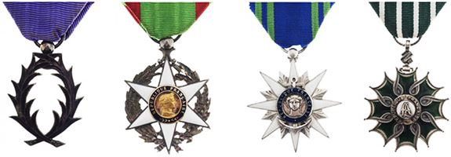
Les 4 ordres ministériels (dans leur ordre protocolaire) qui n’ont pas été supprimés après la création de l’ordre national du Mérite en 1963 : Les Palmes Académiques (04.10.1955), Mérite agricole (07.07.1883), Mérite maritime (09.02.1930) et Arts et Lettres (02.05.1957).
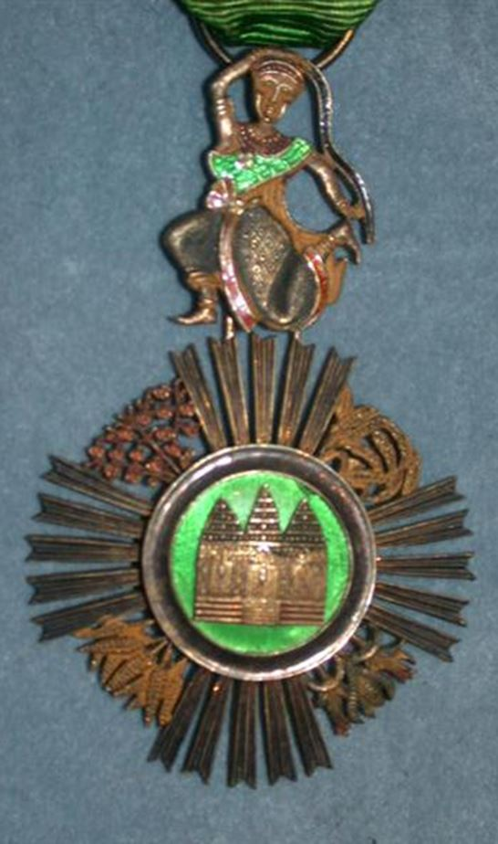
UN INSIGNE TRÈS PROCHE DE CELUI DE LA LÉGION D’HONNEUR
L’insigne de l’Ordre du Mérite agricole présente une forme très proche de la Légion d’honneur et les deux bandes rouges qui bordent sont ruban moiré vert (couleur de l’agriculture) symbolisent bien la prestigieuse institution de l'ordre national de la Légion d'honneur créé par Napoléon Bonaparte le 19 mai 1802 !
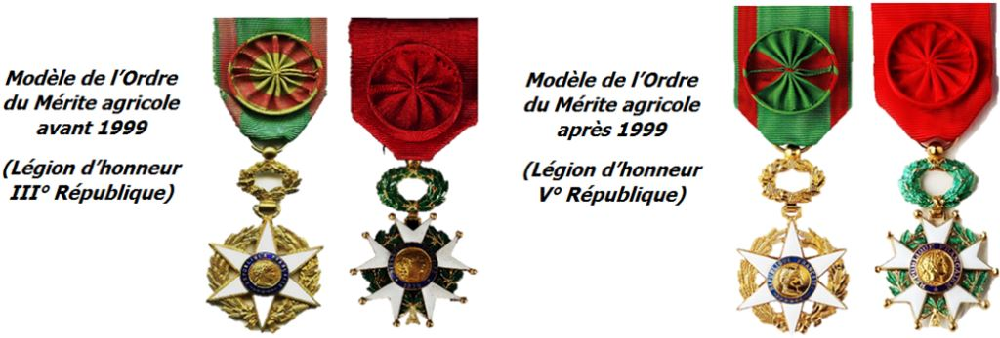
L'ordre comprend 3 échelons, à savoir : le grade de chevalier, créé en 1883 (qui représente environ 23.000 titulaires actuellement), puis celui d'officier (5.000 titulaires) et qui doivent être chevaliers depuis au moins 5 ans (sauf dispense ou s’ils sont officiers de la Légion d’honneur) dont le grade fut créé le 18 juin 1887 et enfin celui de commandeur (400 de nos jours) dont le grade fut le dernier créé le 3 août 1900. La devise de l’ordre est « Honneur et Agriculture » sur le modèle de celle de la Légion d’honneur qui est « Honneur et Patrie ». De sa création en 1883 à 1999, l’ordre du Mérite agricole comportait un ruban moiré vert bordé d’amarante, mais à partir du décret du 4 novembre 1999, il conservera son ruban vert mais cette fois-ci bordé de rouge (Légion d’honneur) et non plus amarante.
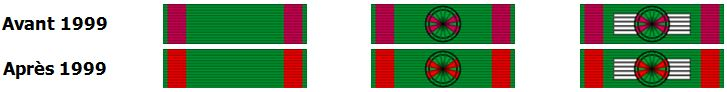
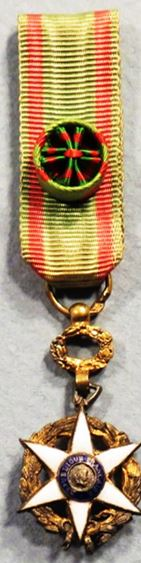
Il existe deux promotions l’une au 1er janvier (pour les personnes du monde agricole) et au 14 juillet (pour les autres). Chaque grade est annuellement contingenté. Les étrangers peuvent y être admis (hors contingents français). En 1914, cette distinction pourra même être attribuée à des militaires qui avaient participés à des travaux spéciaux par une promotion dites « de guerre » en 1921. L’ordre du Mérite agricole sera significativement réorganisé par le décret n° 59-729 du 15 juin 1959, instituant un contingent annuel de 60 commandeurs, 800 officiers et 4.200 chevaliers. Dorénavant pour être admis dans l'ordre, il faut être âgé de 30 ans au moins, jouir de ses droits civils et justifier de 15 ans de services réels rendus à l'agriculture soit dans l'exercice de la pratique agricole ou des industries qui s'y rattachent, soit dans les fonctions publiques ou par des travaux scientifiques ou des publications agricoles. Le dernier décret sur l’ordre date du 26 juin 2013 et restreint le nombre de bénéficiaires mais l’ouvre à de nouvelles professions (dont celles de l’alimentaire et la restauration). Il est vrai que de nos jours la France ne compte plus qu’un million d’agriculteurs exerçant dans plus de 500.000 exploitations, sur une population de 67 millions, soit 1,5 % alors même que cette population représentait la moitié des français il y a 130 ans. Se pose d’ailleurs dorénavant la légitimité d’un tel ordre ministériel quand on sait que l’ordre national du Mérite, créé en 1963, pourrait tout aussi bien récompenser les mérites éminents dans l’industrie de l’agriculture. Il est vrai toutefois que cela reviendrait à faire disparaitre une figure forte et symbolique de notre héritage phaleristique.
UNE CROIX, QUI EST EN FAIT UNE ÉTOILE
Comme pour la Légion d’honneur, la croix de l’ordre du Mérite agricole est en fait une étoile d’or, émaillée de blanc à six rayons (la Légion d’honneur en compote 5), posée sur une couronne de tiges de blé et de maïs tressées. L’Etoile porte en son centre un médaillon représentant une Marianne (symbole de la République française) entourée de l’exergue sur fond émaillé bleu, du mot « République française ». L’insigne de l’ordre est suspendu par une bélière à un ruban moiré vert bordé de deux rayures rouges de chaque côté. Le revers de la médaille porte l’exergue sur 3 lignes de « Mérite Agricole 1883 ». L’Etoile est d’un diamètre de 35 mm pour les chevaliers et officiers et de 60 mm pour les commandeurs. De plus, les étoiles d’officier et de commandeur sont toutes deux, surmontées d’une couronne mi- feuilles de vigne, mi- feuilles d’olivier. C'est à la Maison de joaillerie et de bijouterie « Lemoine & fils » que l'on doit la réalisation du modèle original de la croix du Mérite agricole.
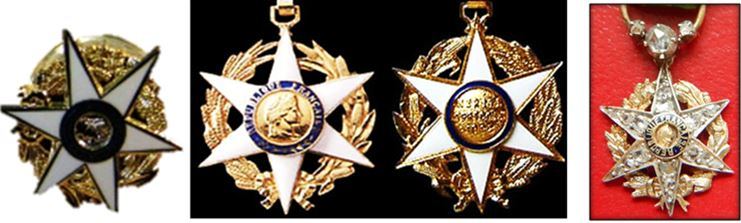
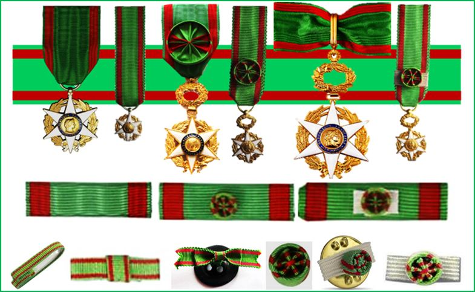
Insignes de l’ordre en ordonnance (grand modèle) et en réduction (petit modèle), ruban de l’ordre en barrette (ou dixmude) pour les uniformes administratifs et militaires et insignes de ruban pour les grades echevalier (ruban simple ou à nœud pour les dames), rosette pour les officiers et rosettes sur ruban blanc (ou canapé) pour les commandeurs.
LE « POIREAU »
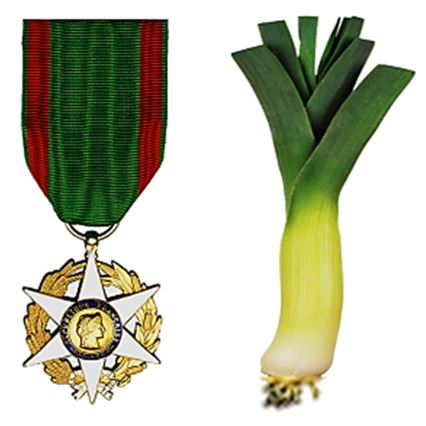
Lors de sa création, le grand public et les journalistes (sans doute jaloux !) cherchèrent à tourner en dérision la nouvelle « décoration des champs » et lui infligèrent le sobriquet de « poireau » qui lui restera.
Ce nom lui a été donné par analogie à l'insigne constitué d'une étoile émaillée de blanc suspendue à un ruban dont la plus grande partie est verte et à la plante potagère avec son bulbe blanc surmonté d'un panache vert.
Gaëlle Charcosset doctorante en histoire, dans son ouvrage « La distinction aux champs. Les décorés du Mérite agricole (Rhône, 1883-1939) » n’hésite pas à écrire :
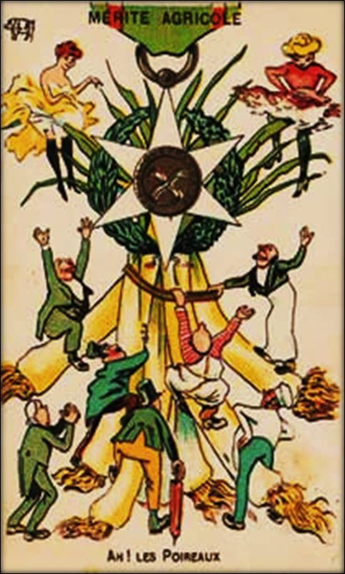
Caricature fin XIX° de « l’ordre du Poireau »
« Cette étude analyse les deux dimensions accordées à la décoration du Mérite agricole. Professionnelle, la distinction témoigne des critères de l’excellence agricole formulés par le ministère de l’Agriculture nouvellement créé : apparaît alors la volonté de structurer une filière agricole en récompensant les acteurs de progrès scientifiques ou techniques et d’un enseignement spécifique, en mesure de rendre l’agriculture française plus performante. Au sein des producteurs, elle érige en modèle d’une part les spécialisations agricoles répondant aux attentes du marché et fondées sur la qualité, d’autre part le dévouement au tissu associatif agricole et plus largement rural.
Les détracteurs de la décoration expliquent l’importance de ses effectifs par la distinction de soutiens politiques. L’instruction des dossiers de candidature permet de mettre en évidence l’acceptation de la pratique des recommandations et une utilisation circonstanciée par l’administration, en partie en fonction des opinions politiques des élus locaux. De plus, quoique l’opinion des impétrants soit prise en considération, elle n’empêche pas la distinction de membres actifs de syndicats agricoles affiliés à l’Union du Sud-Est. »
Il est vrai que la jeune III° République française de la fin du XIX° siècle et ses nouveaux ministères (dont celui de l’Agriculture), cherchaient par ses nombreux ordres ministériels à se rallier les bonnes grâces des français et particulièrement d’une paysannerie qui à défaut de ne plus être Monarchiste était sans doute encore Bonapartiste ! C’est donc dans cette démarche que s’inscrivit « Le Poireau ».
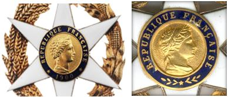
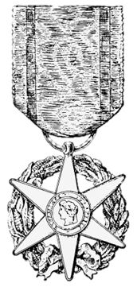
UNE DISTINCTION RÉGIT PAR UN CONSEIL DE L’ORDRE
Comme pour l’ordre de la Légion d’honneur, l’ordre du Mérite agricole, possède un Conseil de l’ordre qui siège auprès du ministre de l'Agriculture, président de droit et dont les 16 membres, qui sont tous également de droit commandeur du Mérite agricole, est ainsi composé :
Le ministre de l'Agriculture, président.
Un membre du conseil de l'Ordre de la Légion d'honneur, nommé par le ministre de l'agriculture sur la proposition du grand chancelier de la Légion d'honneur, vice-président.
Le directeur du cabinet du ministre de l'Agriculture.
Cinq directeurs généraux ou directeurs du ministère de l'Agriculture nommés par arrêté du ministre de l'Agriculture.
Huit personnalités choisies parmi les notabilités du monde agricole, ayant le grade de commandeur du Mérite agricole, nommées par arrêté du ministre de l'Agriculture pour une durée de trois ans renouvelable.
Le chef du bureau du cabinet du ministre de l'Agriculture qui a également pour charge d’assurer le secrétariat du conseil de l'ordre.
Sur le modèle de l’Association d’entraide des Membres de la Légion d’honneur, il existe une Association des Membres de l'Ordre du Mérite agricole (AMOMA) créée en 1992, placée sous le haut patronage du ministre de l’Agriculture et dont le siège est au ministère de l'Agriculture 78 Rue de Varenne à Paris VII°. L’association a pour but d’assurer la promotion et défense des valeurs professionnelles, morales, civiques et nationales de l’agriculture françaises et de ses membres. Son président est actuellement Louis ORENGA de GAFFORY, ancien directeur du Centre d’Information des Viandes. Des sections départementales de l’AMOMA, couvrent l'ensemble du territoire national.
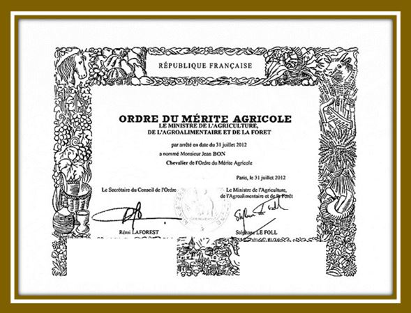
Le diplôme de l’ordre du Mérite agricole est sans changement depuis sa création en 1883
LA MÉDAILLE D’HONNEUR AGRICOLE
Bien que malmené de nos jours par l’Union Européenne, les agriculteurs restent dans la tradition française une population aimée (et souvent choyée des politiques qui en ont parfois peur » car ils détiennent l’arme de la « nourriture ») ! On ne sera donc pas surpris qu’en plus de l’ordre du Mérite agricole créé en 1883, fut également institué - par décret no 84.1110 du 11 décembre 1984, modifié par le décret no 2001-740 du 23 août 2001 et le décret no 2007-259 du 27 février 2007 - une médaille d’honneur agricole. Cette médaille est destinée à récompenser l’ancienneté des services effectués dans une, deux, trois ou quatre exploitations, par toute personne salariée affiliée au régime de sécurité sociale agricole et tirant de cette occupation l’essentiel de ses ressources. Cette médaille ministérielle qui ne doit pas être confondue avec le Mérite agricole, qui lui est un ordre ministériel, est destinée à récompenser l'ancienneté des services effectués par toute personne salariée du secteur agricole ou des industries s'y rattachant, et tirant de cette occupation l'essentiel de ses ressources. Le ruban est vert parti d’un ruban tricolore.
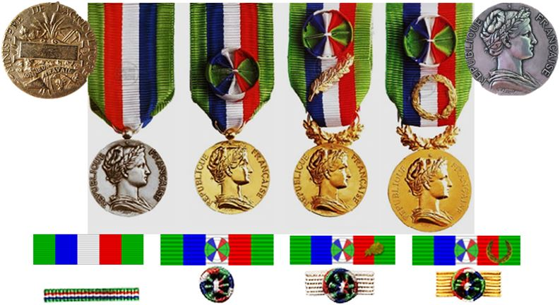
La médaille d’honneur Agricole est attribuée en deux promotions les 1er et 14 juillet par arrêté préfectoral (mais des dispenses peuvent avoir lieu, notamment en cas d’incapacité déclarée). La médaille comporte 4 grades qui sont les suivants :
Médaille d’argent pour 20 ans de services,
Médaille de vermeil pour 30 ans de services,
Médaille d’or pour 38 ans de services et,
Médaille grand or pour 43 ans services.
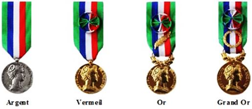
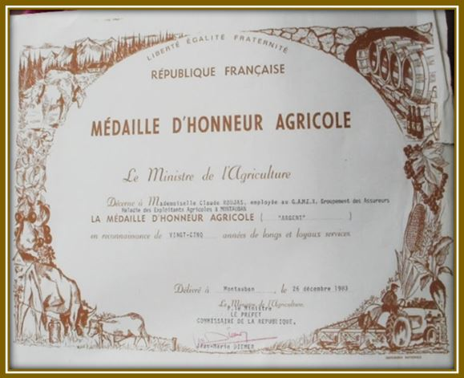
UN ORDRE QUI FERA DE NOMBREUSES ÉMULES…
Comme la Légion d’honneur qui a pu inspirer de nombreux ordres nationaux étrangers, l’ordre du Mérite agricole a également inspiré de nombreux pays et notamment d’anciennes colonies françaises, mais pas seulement. Aujourd’hui quasiment tous les pays du monde des 5 continents ont leur propres ordre ou médaille du Mérite agricole démontrant ainsi qu’une fois de plus la France avait été visionnaire dans ce besoin de récompenser ceux qui nourrissent les peuples de leurs pays. On ne serait pas surpris de constater enfin que la plupart de ces médailles ont des rubans à majorité vert moiré.
Partager cette page